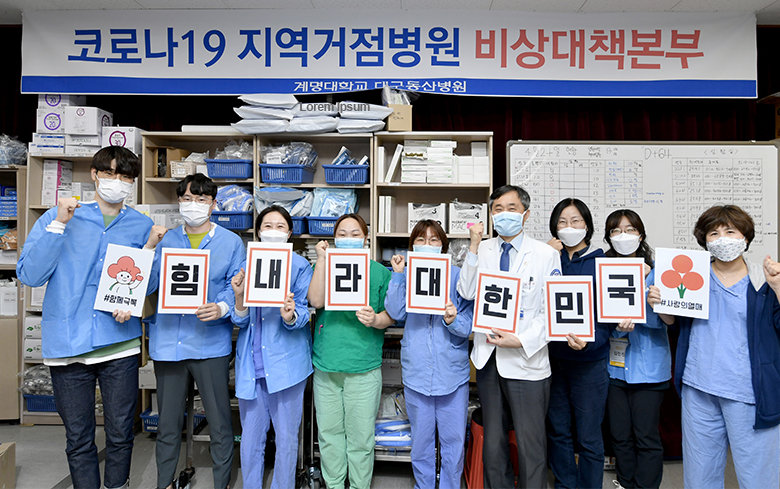

Webzine CCK
Community Responses to COVID-19
Community Chest of Korea (CCK) is the largest charity of the Republic of Korea, raising more than $ 500M/year. Since its launch in 1998 with Community Chest of Korea Act, it has served millions of lives through its collective impact approach at 17 local chapters. As a proud member of United Way Worldwide, we are pleased to share Korea’s best practices and lessons learned from the country’s Covid-19 response with network partners. The world is experiencing unprecedented challenges, however we are in this together and will get through this together.

international@chest.or.kr
Community Chest of Korea, All Rights Reserved
Community Chest of Korea, All Rights Reserved